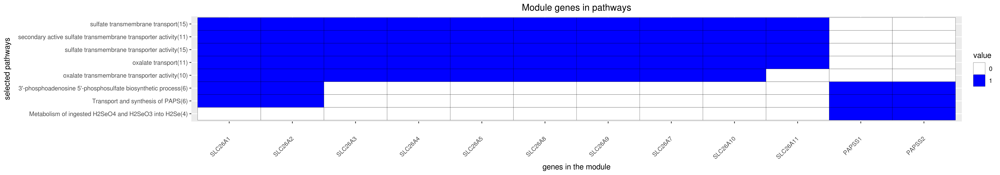

DREAM Module Identification Challenge – Consensus modules
PPI-STRING_Consensus_mod243
| Assigned name |
NA |
| Network |
PPI-STRING |
| Module ID |
PPI-STRING_Consensus_mod243 |
| Module size |
12 genes |
|
Module genes
This module comprises the following genes:
| Gene ID |
Gene Symbol |
Gene Name |
| 9061
|
PAPSS1
|
3'-phosphoadenosine 5'-phosphosulfate synthase 1
|
| 9060
|
PAPSS2
|
3'-phosphoadenosine 5'-phosphosulfate synthase 2
|
| 10861
|
SLC26A1
|
solute carrier family 26 member 1
|
| 65012
|
SLC26A10
|
solute carrier family 26 member 10
|
| 284129
|
SLC26A11
|
solute carrier family 26 member 11
|
| 1836
|
SLC26A2
|
solute carrier family 26 member 2
|
| 1811
|
SLC26A3
|
solute carrier family 26 member 3
|
| 5172
|
SLC26A4
|
solute carrier family 26 member 4
|
| 375611
|
SLC26A5
|
solute carrier family 26 member 5
|
| 115111
|
SLC26A7
|
solute carrier family 26 member 7
|
| 116369
|
SLC26A8
|
solute carrier family 26 member 8
|
| 115019
|
SLC26A9
|
solute carrier family 26 member 9
|
|
Functional annotation
Modules were tested for enrichment in functional and pathway annotations using two complementary approaches:
1. To select a small number of specific / non-redundant annotations for each module, a regression-based approach was used;
2. To obtain the complete set of enriched annotations, an extension of Fisher’s exact test that takes annotation bias into account was employed (Wallenius’ non-central hypergeometric distribution).
Most specific annotations for this module
1Regression coefficient
2Fisher’s exact test nominal P-value
3Annotation source (Reactome, GO biological process (BP), molecular function (MF) and cellular component (CC))
4GO category or Reactome pathway
5High-level branch of annotation tree
Gene membership

All enriched annotations
Gene Ontology
11Nominal enrichment p-value (Wallenius’ noncentral hypergeometric distribution)
2FDR corrected p-value (Benjamini-Hochberg)
Reactome
| P-value1 |
FDR2 |
Term |
| 8.05e-09
|
1.79e-06
|
TRANSPORT OF INORGANIC CATIONS ANIONS AND AMINO ACIDS OLIGOPEPTIDES
|
| 1.16e-08
|
3.37e-06
|
TRANSPORT OF INORGANIC CATIONS ANIONS AND AMINO ACIDS OLIGOPEPTIDES
|
| 2.38e-07
|
5.87e-05
|
SLC MEDIATED TRANSMEMBRANE TRANSPORT
|
| 3.85e-07
|
7.08e-05
|
SLC MEDIATED TRANSMEMBRANE TRANSPORT
|
| 5.30e-06
|
1.06e-03
|
TRANSMEMBRANE TRANSPORT OF SMALL MOLECULES
|
| 1.36e-04
|
1.68e-02
|
CYTOSOLIC SULFONATION OF SMALL MOLECULES
|
| 7.29e-04
|
8.91e-02
|
CYTOSOLIC SULFONATION OF SMALL MOLECULES
|
| 4.86e-03
|
4.01e-01
|
PHASE II CONJUGATION
|
| 7.79e-03
|
6.57e-01
|
PHASE II CONJUGATION
|
| 1.28e-02
|
8.97e-01
|
BIOLOGICAL OXIDATIONS
|
| 1.54e-02
|
1.00e+00
|
BIOLOGICAL OXIDATIONS
|
|
11Nominal enrichment p-value (Wallenius’ noncentral hypergeometric distribution)
2FDR corrected p-value (Benjamini-Hochberg)
Mouse mutant phenotypes
11Nominal enrichment p-value (Wallenius’ noncentral hypergeometric distribution)
2FDR corrected p-value (Benjamini-Hochberg)
Generated on: Thu Aug 23 09:56:27 2018 - R2HTML